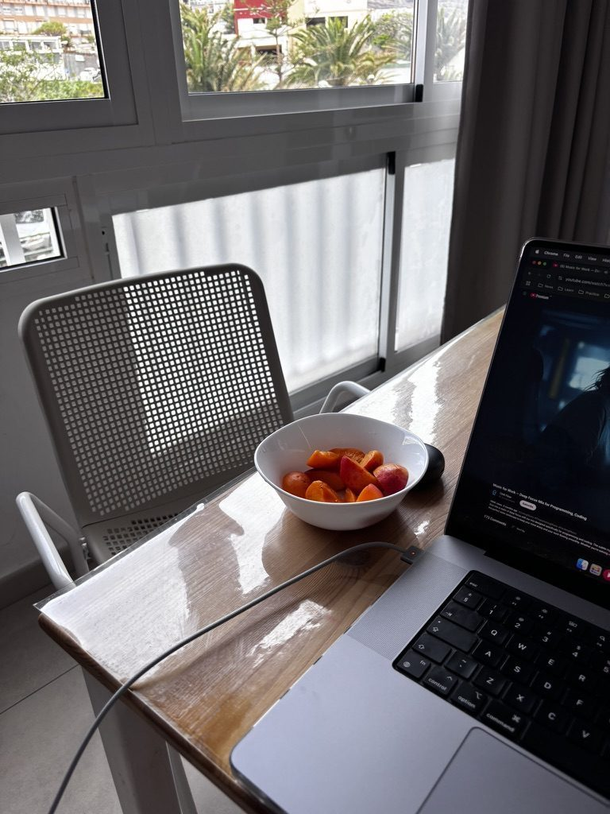
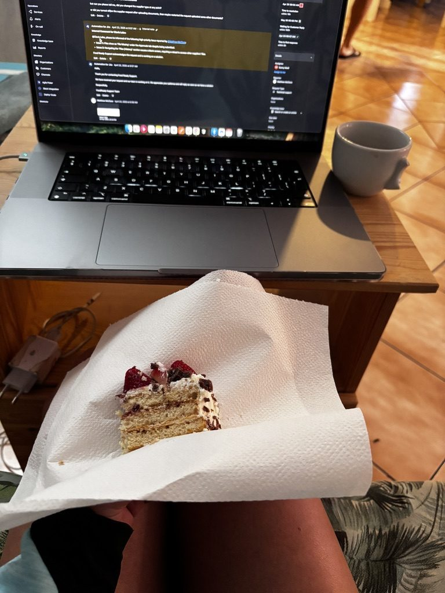
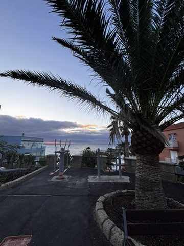
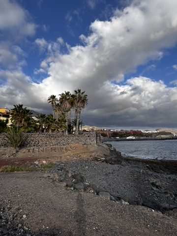
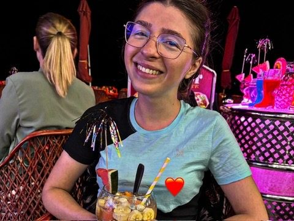
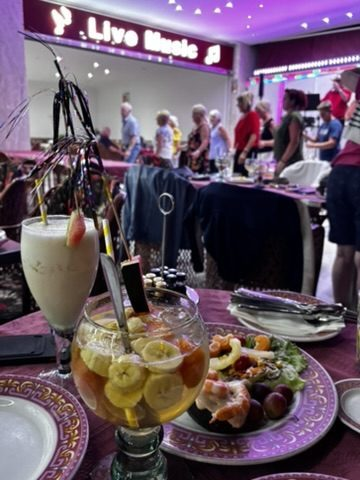
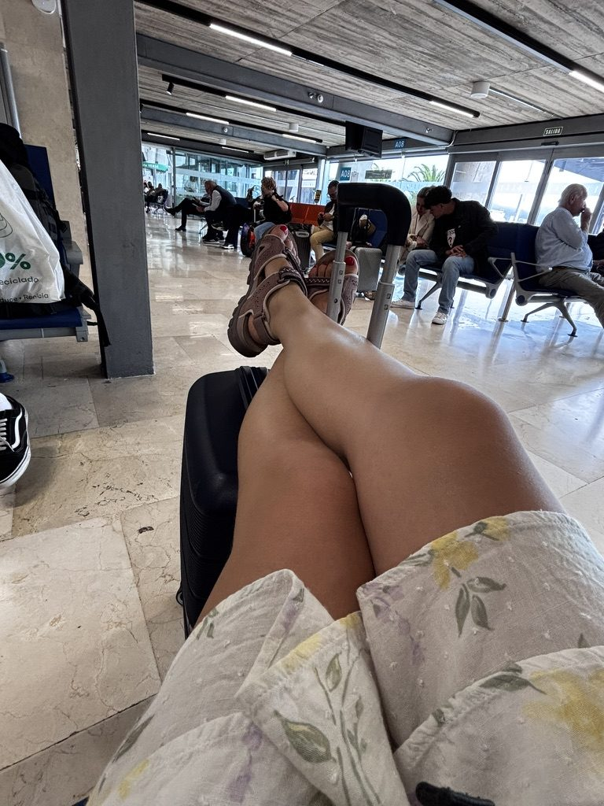

The first week of being somewhere new is all activity — you're consuming the place as fast as you can, ticking things off, orienting yourself. The second week is when the place starts becoming a routine. You have a favourite coffee spot. You know which road to take. You stop being a tourist and start being a temporary resident. Tenerife did this to me quickly.

Nomad apartment setup: laptop, fruit, good light. Everything else is optional.
The apartment had everything I needed and a few things I hadn't expected to care about — a kitchen, a balcony, natural light in the morning. The fruit at the local market was cheap and very good, which is a detail that sounds small and is not small at all when you're working long days and need something to reach for that isn't a biscuit.
The cowork and the cookie

Struggling to work. Then an Argentinian friend I'd met three days earlier put a cookie on my desk. Day saved.
Coworking spaces are one of the things that make remote travel sustainable rather than just theoretically possible. You go to the same place every morning, you sit next to different people every day, and eventually someone puts a cookie on your desk and it becomes a friendship. My Argentinian friend — met at the cowork, three days in — made my afternoon with exactly this gesture. We had lunch together after and talked about everything except work for an hour.
This is what coworking is actually for. Not the fast wifi (though the fast wifi matters). The person at the next desk who sees you staring at a screen and decides that what you need is a cookie.
Every day is outdoor gym day

Tenerife has outdoor gyms on the seafront. I went every day. Zero excuses, zero membership fees.
The promenades along the Tenerife coast have outdoor gym equipment installed at regular intervals — pull-up bars, parallel bars, resistance machines, all of it free, all of it looking directly at the sea. I used them every morning before opening the laptop. It takes about twenty minutes and costs nothing and makes the rest of the day go differently. This is, I think, one of the things southern European and Atlantic island town planners understand that many other places don't — that public exercise infrastructure is infrastructure.
The beach in between

The beach between the gym and the sunset. Life is occasionally very good.
The gap between the end of work and the start of the evening was usually the beach. Not for swimming every time — sometimes just sitting, watching the light change, letting the afternoon decompress. I have found that if you give yourself thirty minutes on a beach before dinner you arrive at dinner in a better state than if you go straight from the screen. This is not a scientific claim. It's just what I noticed.
Yoga at sunset

Yoga at sunset. The sky did most of the work here. I just showed up.
There are evenings in Tenerife when the sunset is so specific and so correct that doing anything other than being outside and pointing your body at it feels like a waste. On one of those evenings I ended up doing yoga on a viewpoint above the coast as the sun went down. I am not a regular yoga practitioner. I am the kind of person who does yoga when the setting demands it and the setting definitely demanded it.
The sky went through orange and then deep red and then a colour I don't have a word for. I held a tree pose and fell over once and didn't care even slightly.
The party

Time to party. Tenerife does this extremely well.

My buddy. The dancing. The food. In that order, more or less simultaneously.
I went out properly once during the whole stay, which for me is approximately the right ratio of nights out to quiet evenings. My buddy and I found a place that had both dancing and food — which is a combination I will always choose over either one alone — and the food was genuinely the best I had on the entire trip. I am not going to tell you what it was because I don't fully remember, which tells you something about the state I was in by the time I ate it. I remember it was good. Very good. The dancing was also good. The night was long.
Time to move on

Time to move on. This feeling — sad to leave, excited for what's next — is the whole thing.
There is a specific feeling that comes at the end of a stay that has gone well. Not relief, not excitement exactly. More like a full-stomach feeling — you had everything, you didn't rush, and now you're ready for the next thing in the way you can only be when you've actually finished the one you're in. Tenerife gave me that. The outdoor gym, the cookie, the sunset, the food I can't fully remember but absolutely can — and then the bag packed and the next adventure in front of me.
That's the whole thing, isn't it. Sad to leave. Excited to go. Both at once.